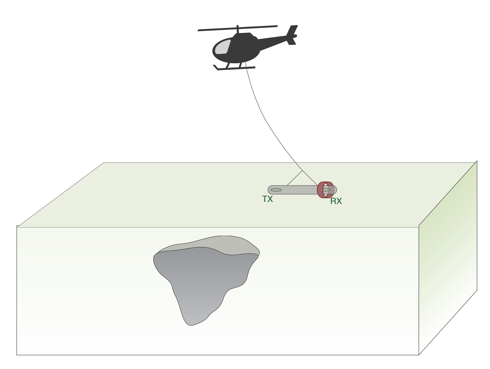

|
The basic physics of airborne FDEM is illustrated by the animation below. Click through the radio buttons to see how an airborne FDEM system senses a buried conductive object.
A helicopter tows a tube containing a pair of transmitter-receiver loops. |
 |